Composite Module (compmech.composite)¶
The compmech.composite module includes functions used to calculate
laminate properties based on input data of stacking sequence and lamina
properties.
The most convenient usage is probably using the
compmech.composite.laminate.read_stack() function:
from compmech.composite.laminate import read_stack
laminaprop = (E11, E22, nu12, G12, G13, G23)
plyt = ply_thickness
stack = [0, 90, +45, -45]
lam = read_stack(stack, plyt=plyt, laminaprop=laminaprop)
Where the laminate stiffness matrix, the often called ABD matrix, with
shape=(6, 6), can be accessed using:
>>> lam.ABD
and when shear stiffnesses are required, the ABDE matrix, with
shape=(8, 8):
>>> lam.ABDE
Composite Laminate Module (compmech.composite.laminate)¶
-
class
compmech.composite.laminate.Laminate[source]¶ attribute
description
plies
list of plies
t
total thickness of the laminate
offset
offset at the normal direction
e1
equivalent laminate modulus in 1 direction
e2
equivalent laminate modulus in 2 direction
g12
equivalent laminate shear modulus in 12 direction
nu12
equivalent laminate Poisson ratio in 12 direction
nu21
equivalent laminate Poisson ratio in 21 direction
xiA
laminate parameters for extensional matrix A
xiB
laminate parameters for extension-bending matrix B
xiD
laminate parameters for bending matrix D
A
laminate extension matrix
B
laminate extension-bending matrix
D
laminate bending matrix
E
laminate transferse shear matrix
ABD
laminate ABD matrix
ABDE
laminate ABD matrix with transverse shear terms
Methods
Use the ABDE matrix based on lamination parameters.
calc_constitutive_matrix(self)Calculates the laminate constitutive matrix
calc_equivalent_modulus(self)Calculates the equivalent laminate properties.
Calculate the lamination parameters.
force_balanced_LP(self)Force balanced lamination parameters
force_orthotropic(self)Force an orthotropic laminate
force_symmetric(self)Force a symmetric laminate
force_symmetric_LP(self)Force symmetric lamination parameters
rebuild
-
calc_ABDE_from_lamination_parameters(self)[source]¶ Use the ABDE matrix based on lamination parameters.
Given the lamination parameters
xiA,xiB,xiCandxiD, the ABD matrix is calculated.
-
calc_constitutive_matrix(self)[source]¶ Calculates the laminate constitutive matrix
This is the commonly called
ABDmatrix withshape=(6, 6)when the classical laminated plate theory is used, or theABDEmatrix when the first-order shear deformation theory is used, containing the transverse shear terms.
-
calc_equivalent_modulus(self)[source]¶ Calculates the equivalent laminate properties.
- The following attributes are calculated:
e1, e2, g12, nu12, nu21
-
calc_lamination_parameters(self)[source]¶ Calculate the lamination parameters.
- The following attributes are calculated:
xiA, xiB, xiD, xiE
-
force_balanced_LP(self)[source]¶ Force balanced lamination parameters
The lamination parameters 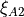 and are set to null to force a balanced laminate.
-
force_orthotropic(self)[source]¶ Force an orthotropic laminate
The terms 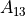, 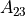, 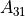, 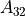, 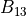, 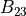, 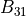, 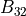, 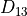, 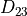, 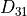, 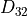 are set to zero to force an orthotropic laminate.
-
-
compmech.composite.laminate.read_lamination_parameters(thickness, laminaprop, xiA1, xiA2, xiA3, xiA4, xiB1, xiB2, xiB3, xiB4, xiD1, xiD2, xiD3, xiD4, xiE1, xiE2, xiE3, xiE4)[source]¶ Calculates a laminate based on the lamination parameters.
The lamination parameters: 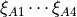, 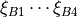, 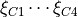, 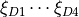, 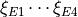
are used to calculate the laminate constitutive matrix.
- Parameters
- thicknessfloat
The total thickness of the laminate
- laminaproptuple
The laminaprop tuple used to define the laminate material.
- xiA1 to xiD4float
The 16 lamination parameters used to define the laminate.
- Returns
- lamLaminate
laminate with the ABD and ABDE matrices already calculated
-
compmech.composite.laminate.read_stack(stack, plyt=None, laminaprop=None, plyts=[], laminaprops=[], offset=0.0)[source]¶ Read a laminate stacking sequence data.
An
Laminateobject is returned based on the inputs given.- Parameters
- stacklist
Angles of the stacking sequence in degrees.
- plytfloat, optional
When all plies have the same thickness,
plytcan be supplied.- laminaproptuple, optional
When all plies have the same material properties,
laminapropcan be supplied.- plytslist, optional
A list of floats with the thickness of each ply.
- laminapropslist, optional
A list of tuples with a laminaprop for each ply.
- offsetfloat, optional
Offset along the normal axis about the mid-surface, which influences the laminate properties.
Notes
plytorplytsmust be suppliedlaminaproporlaminapropsmust be suppliedFor orthotropic plies, the
laminapropshould be:laminaprop = (E11, E22, nu12, G12, G13, G23)
For isotropic pliey, the
laminapropshould be:laminaprop = (E, E, nu)
Composite Lamina Module (compmech.composite.lamina)¶
-
class
compmech.composite.lamina.Lamina[source]¶ attribute
description
plyid
id of the composite lamina
matobj
a pointer to a MatLamina object
t
ply thickness
theta
ply angle in degrees
L
transformation matrix for displacements to laminate csys
R
transformation matrix for stresses to laminate csys
T
transformation matrix for stresses to lamina csys
QL
constitutive matrix for plane-stress in laminate csys
laminates
laminates that contain this lamina
Methods
rebuild
Composite Matlamina Module (compmech.composite.matlamina)¶
-
class
compmech.composite.matlamina.MatLamina[source]¶ Orthotropic material lamina
attributes
description
e1
Young Modulus in direction 1
e2
Young Modulus in direction 2
g12
in-plane shear modulus
g13
transverse shear modulus for plane 1-Z
g23
transverse shear modulus for plane 2-Z
nu12
Poisson’s ratio 12
nu13
Poisson’s ratio 13
nu23
Poisson’s ratio 23
nu21
Poisson’s ratio 21: use formula nu12/e1 = nu21/e2
nu31
Poisson’s ratio 31: use formula nu31/e3 = nu13/e1
nu32
Poisson’s ratio 32: use formula nu23/e2 = nu32/e3
rho
especific mass (mass / volume)
a1
thermal expansion coeffiecient in direction 1
a2
thermal expansion coeffiecient in direction 2
a3
thermal expansion coeffiecient in direction 3
tref
reference temperature
st1,st2
allowable tensile stresses for directions 1 and 2
sc1,sc2
allowable compressive stresses for directions 1 and 2
ss12
allowable in-plane stress for shear
strn
allowable strain for direction 1
q11
lamina constitutive constant 11
q12
lamina constitutive constant 12
q13
lamina constitutive constant 13
q21
lamina constitutive constant 21
q22
lamina constitutive constant 22
q23
lamina constitutive constant 23
q31
lamina constitutive constant 31
q32
lamina constitutive constant 32
q33
lamina constitutive constant 33
q44
lamina constitutive constant 44
q55
lamina constitutive constant 55
q66
lamina constitutive constant 66
u
matrix with lamina invariants
c
matrix with lamina stiffness coefficients
Notes
For isotropic materials when the user defines
 and 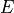,
and 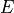,  will be
recaculated based on equation: 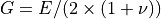; in a lower
priority if the user defines and , will be recaculated based
on equation: 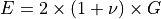.
will be
recaculated based on equation: 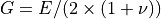; in a lower
priority if the user defines and , will be recaculated based
on equation: 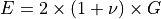.Methods
read_inputs
rebuild
-
compmech.composite.matlamina.read_laminaprop(laminaprop=None)[source]¶ Returns a
MatLaminaobject based on an inputlaminaproptuple- Parameters
- laminaproplist or tuple
Tuple containing the folliwing entries:
(e1, e2, nu12, g12, g13, g23, e3, nu13, nu23)
for othotropic materials the user can only supply:
(e1, e2, nu12, g12, g13, g23)
for isotropic materials the user can only supply:
(e1, e2, nu12)
symbol
value
e1
Young Module in direction 1
e2
Young Module in direction 2
nu12
12 Poisson’s ratio
g12
12 Shear Modulus
g13
13 Shear Modulus
g23
13 Shear Modulus
e3
Young Module in direction 3
nu13
13 Poisson’s ratio
nu23
23 Poisson’s ratio
- Returns
- matlamMatLamina
A
MatLaminaobject.